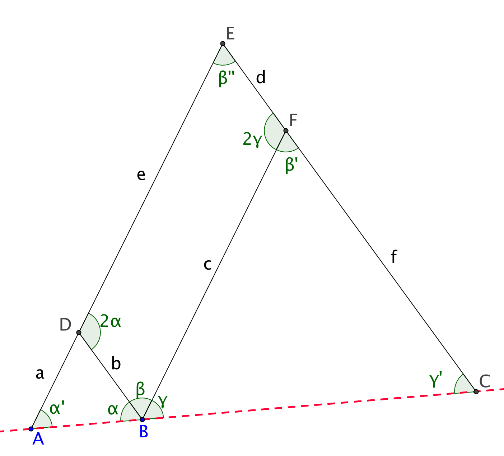

Aufgabe 5.3
Begründen Sie sorgfältig, warum der Pantograph eine zentrische Streckung realisiert.
- Identifizieren Sie das Gelenkparallelogramm
- Nutzen Sie Winkelbeziehungen (Stufen-, Scheitelwinkel)
- Zeigen Sie die Ähnlichkeit der relevanten Dreiecke
- Begründen Sie, warum A, B, C auf einer Geraden liegen

Hauptbehauptung: Der Pantograph realisiert eine zentrische Streckung mit Zentrum $A$.
Schritt 1: Parallelogramm-Eigenschaft
$BFED$ ist ein Gelenkparallelogramm, daher:
- $\overline{BF} \parallel \overline{DE}$ und $\overline{BD} \parallel \overline{FE}$
- Gegenüberliegende Winkel sind gleich
Schritt 2: Winkelgleichheiten
Aus den Parallelitäten folgen Stufenwinkelbeziehungen:
- $\angle BDE = \angle DEF$ (Stufenwinkel an $\overline{BF} \parallel \overline{DE}$)
- $\angle DBF = \angle BFE$ (Stufenwinkel an $\overline{BD} \parallel \overline{FE}$)
Schritt 3: Ähnlichkeit der Dreiecke
Die Dreiecke $\triangle ABD$, $\triangle ACE$ und $\triangle BCF$ sind ähnlich:
- Gemeinsamer Winkel bei $A$ (für die ersten beiden)
- Gleiche Winkel durch Stufenwinkelbeziehungen
- Nach Winkelsatz (WW) sind die Dreiecke ähnlich
Schritt 4: Kollinearität von A, B, C
Die Punkte $A$, $B$ und $C$ liegen auf einer Geraden.
Durch die Konstruktion sind $\triangle ABD$ und $\triangle BCF$ gleichschenklig. Daher gilt für die Basiswinkel:
- Im $\triangle ABD$: $\angle BAD = \angle BDA = \alpha$
- Im $\triangle BCF$: $\angle CBF = \angle BCF = \beta$
Der Aussenwinkel bei $D$ im $\triangle ABD$ beträgt $\alpha + \alpha = 2\alpha$. Durch die Parallelogramm-Eigenschaft ist $\angle EDF = 2\alpha$. Im Parallelogramm sind gegenüberliegende Winkel gleich: $\angle BFE = \angle BDE = \gamma$.
Winkelsumme im $\triangle ABD$: $\alpha + \alpha + \angle ABD = 180°$
Daraus folgt: $\angle ABD + \angle DBC + \angle CBF = \alpha + \beta + \gamma = 180°$
Somit liegen $A$, $B$ und $C$ auf einer Geraden.
Schlussfolgerung: Da die Dreiecke ähnlich sind und die Punkte kollinear liegen, bildet $A$ das Zentrum einer zentrischen Streckung, die $B$ auf $C$ abbildet. Der Streckfaktor ergibt sich aus dem Verhältnis der Gelenkabstände.
Im Video: Etappe 7 · Strahlensätze bei 4:26